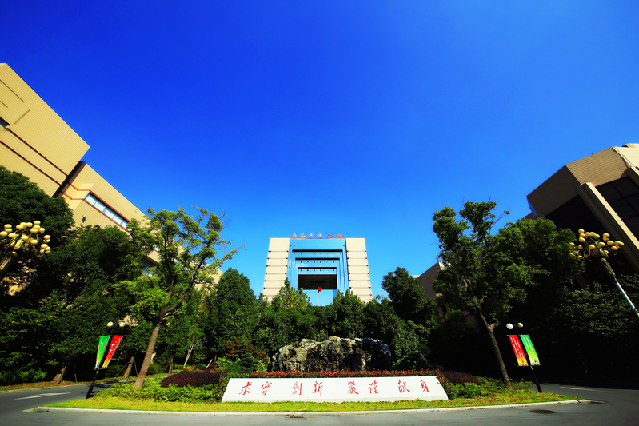

Biography
I am a Postdoctoral Researcher in the Department of Pharmacognosy, School of Pharmacy, Naval Medical University. My current research focuses on interactions between medicinal plants and associated microorganisms, with particular interest in the ecological and functional roles of plant-associated microbial communities.
My academic training is in Pharmacognosy and Chinese Materia Medica, and I also have professional experience in a hospital pharmacy department. My broader research interests include medicinal plant resources, plant-associated microbiomes, and bioactive natural products from medicinal plants and their associated microorganisms.
Research Interests
- Interactions between medicinal plants and associated microorganisms
- Pharmacognosy
- Plant-associated microbiomes
- Medicinal plant resources and quality evaluation
- Bioactive natural products from medicinal plants and associated microorganisms
Education
Shanghai University of Traditional Chinese Medicine
Ph.D. in Chinese Materia Medica
Ph.D. training in Chinese Materia Medica.
Jiangxi University of Chinese Medicine
Master's degree in Pharmacognosy
Master's training in Pharmacognosy.
Research & Professional Experience
Naval Medical University
Postdoctoral Researcher, Department of Pharmacognosy, School of Pharmacy
Research focus: medicinal plant–microbe interactions
Postdoctoral research in pharmacognosy, with a focus on interactions between medicinal plants and associated microorganisms.

Clifford Hospital, Guangzhou, Guangdong, China
Department of Pharmacy
Professional experience in the Department of Pharmacy.
Professional experience in the Department of Pharmacy at Clifford Hospital.
Publications
Research Projects
Contact
Email: zh6876@126.com
Website: zgpt.de5.net